カレンダー接続ガイド ·
カレンダー接続から
初回同期まで。
取り込みたいサービスを一つ選び、以下の画面を見ながら進めてください。
アカウント接続 → カレンダー選択 → 同期実行 → 結果確認の順に説明します。
外部アカウントの接続は任意です。ローカルカレンダーはログインせずに利用できます。
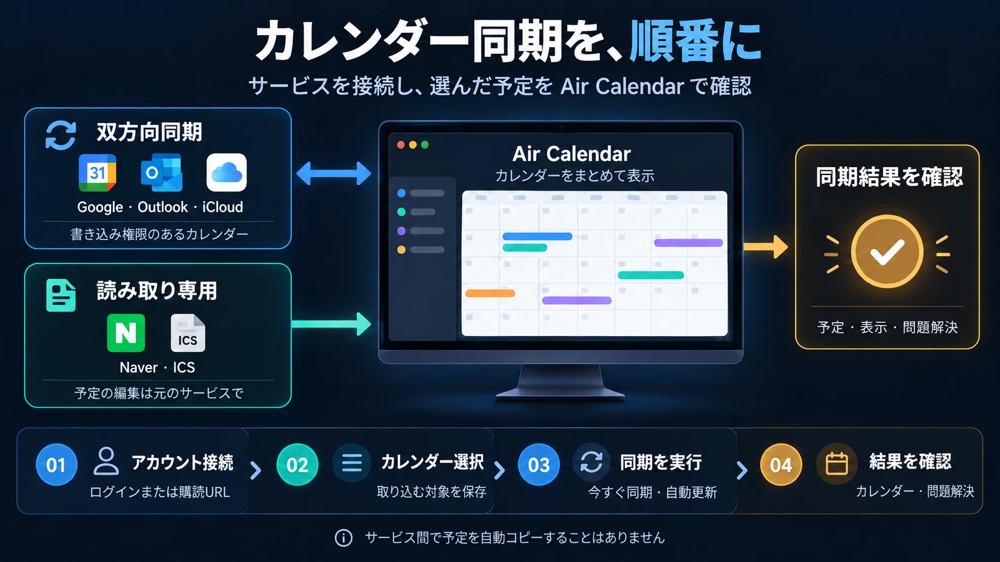
ここから始めましょう
01. 設定画面を開いてください
- Air Calendar上部の同期アイコンをクリックしてください。
メニューから開く場合は、システム → Calendars and sync → Calendars / accounts and synchronizationの順に選びます。開いたウィンドウのタイトルはCalendar managementです。
- ウィンドウ上部の「Connections and subscriptions」タブをクリックしてください。
最初はMy calendarsタブが表示されることがあります。アカウントの追加はConnections and subscriptionsから始めます。Google CalendarとSubscribe by addressのカードが先に表示されます。
- 利用するサービスの「Connect account」をクリックしてください。
Outlook・iCloud・Naver・Yahoo・Zoho・Fastmailを探すには、Connect another accountの横のShow servicesをクリックし、下へスクロールしてください。接続済みの場合は、Connection settings、Reconnect、Choose calendars to importなどのボタンが表示されることがあります。

設定画面は、該当するアプリ言語とサンプルデータで表示したものです。アカウント名、カレンダー名、接続状態は利用者によって異なります。画像をクリックすると原寸で確認できます。現在のアプリでは一部の新しいボタンが英語で表示されるため、本ガイドにも実際の表示名を併記しています。
接続する前に
02. 利用するサービスの準備物を確認してください
「双方向」とは、そのサービスと予定の変更をやり取りできるという意味です。Googleの予定をOutlookへ自動コピーする機能ではありません。共有されたカレンダーは、元のアカウントで付与された書き込み権限によって読み取り専用になる場合があります。
| 接続するサービス | 事前に準備するもの | 予定の編集 |
|---|---|---|
| Google Calendar ↗ | Googleアカウント + デスクトップアプリ用OAuth JSONファイル | 書き込み権限があれば双方向 |
| Outlook · Microsoft 365 ↗ | Microsoftアカウント + カレンダー接続用クライアントID | 書き込み権限があれば双方向 |
| iCloud ↗ | Apple Accountのメールアドレス + アプリ用パスワード | 個人の予定は双方向¹ |
| Naver ↗ | Naver ID + 認証用パスワード | 読み取り専用² |
| Yahoo · Zoho · Fastmail ↗ | アカウントのメールアドレス + サービスに合った認証用パスワード | 個人の予定は双方向¹ |
| ICS購読 ↗ | サービスが発行したiCal / ICS購読アドレス | 読み取り専用 |
¹ CalDAVの繰り返し予定と招待された予定は、元のサービスで編集します。² WindowsでのNaver接続は、サービスの方針により制限される場合があります。
以下で案内するアプリ内のファイル選択欄・パスワード欄にのみ指定してください。このガイドページへの入力は不要です。JSONファイル、アプリ用パスワード、非公開のICSアドレスを、掲示板やスクリーンショットで公開しないでください。
GOOGLE CALENDAR
Google Calendarに接続する
現在のアプリは、利用者が用意したデスクトップアプリ用OAuth認証ファイルで接続します。初回にGoogle Cloudでファイルを作成し、Air Calendarで利用するGoogleアカウントでログインします。
A. 初回のみ：Google認証JSONファイルを準備する
- Google Cloudでプロジェクトを作成してください。
Google Cloud Consoleにログインします。上部のプロジェクト選択メニューから新しいプロジェクトを選び、名前を入力して作成した後、そのプロジェクトを選択します。
- Google Calendar APIを有効にしてください。
APIとサービス → ライブラリでGoogle Calendar APIを検索し、有効にするまたは有効化をクリックします。
- Google Auth Platformで同意画面を準備してください。
Google Auth Platform → ブランディング（Branding）を開きます。初回の場合は開始（Get started）から、アプリ名（例：自分のAir Calendar接続）、サポート用メールアドレス、連絡先メールアドレスを入力します。個人のGmailアカウントでは、対象（Audience）を外部（External）に設定します。組織内のアカウントでは、管理者の方針に従って選択してください。
- テストユーザーとカレンダーの権限を確認してください。
外部アプリをテスト状態で使う場合は、対象（Audience）→ テストユーザー（Test users）→ ユーザーを追加に、実際に接続するGoogleのメールアドレスを入力して保存します。データアクセス（Data Access）→ スコープを追加または削除では、Google Calendar APIの
https://www.googleapis.com/auth/calendarスコープを選んで保存します。 - 「デスクトップアプリ」のクライアントを作成し、JSONをダウンロードしてください。
クライアント（Clients）→ クライアントを作成（Create client）をクリックします。アプリケーションの種類はデスクトップアプリ（Desktop app）を選び、名前を入力して作成します。作成したクライアントのJSONをダウンロードし、PCの見つけやすいフォルダーに保存してください。ウェブアプリケーション用のファイルは、この設定には使えません。
Googleの画面は、アカウントや言語によって異なる場合があります。Google公式のデスクトップ認証準備ガイド · 同意画面とテストユーザーのガイド。上記の手順でPythonのインストールやサンプルコードの実行は必要ありません。
B. Air Calendarで接続し、取り込むカレンダーを選ぶ
- Google Calendarカードの「Connect account」をクリックしてください。
開いたGoogle設定でAccount connectionを選びます。OAuth file and connection helpを展開し、認証情報ファイル → ブラウズから、ダウンロードしたOAuth JSONを選択します。初めて設定するPCでは、ヘルプが最初から開いていることがあります。
- 「Connect Google account」をクリックし、ブラウザーで許可してください。
利用するGoogleアカウントを選び、カレンダーへのアクセス権限を確認して許可します。アプリは完了まで最大3分間待機します。許可が完了したら、Air Calendarへ戻ってください。テストユーザーに追加したアカウントと、ログインしたアカウントが同じかも確認します。
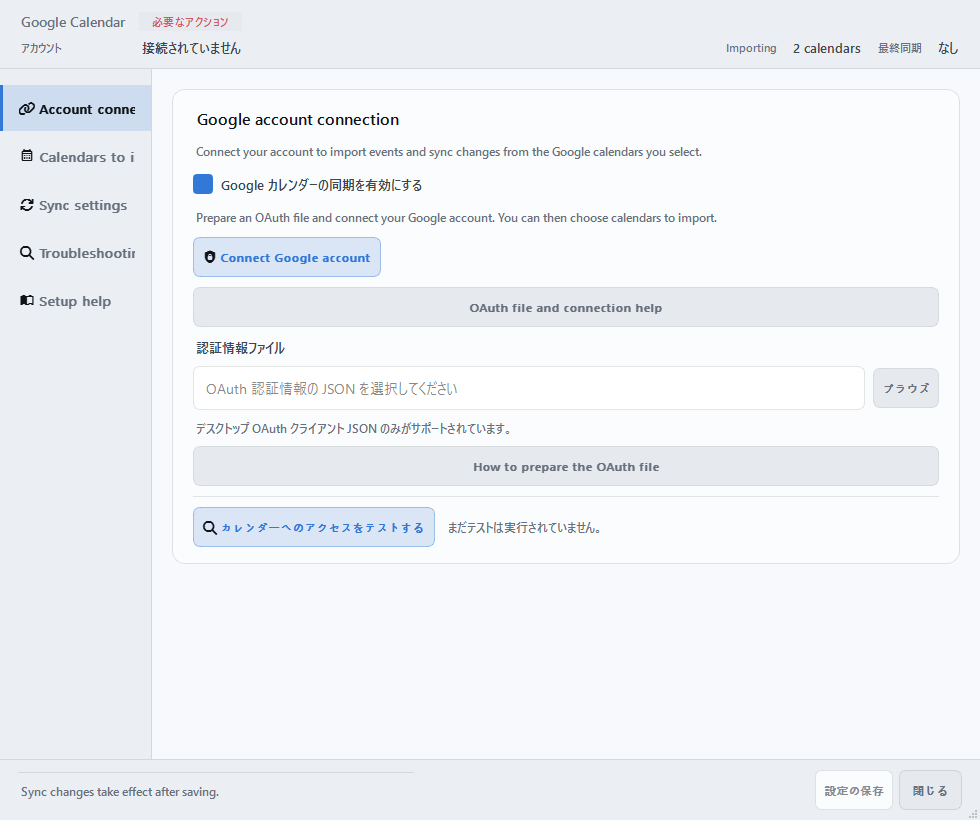
- 「Calendars to import」で「Import」にチェックを入れてください。
接続に成功すると、この画面へ移動します。個人・仕事・共有カレンダーから、使いたいものだけを選びます。新しく作ったカレンダーが見当たらない場合は、Refresh listをクリックしてください。各項目のImport events · Editable / Import events · Read-onlyも確認しましょう。
- 下部の「設定の保存」をクリックしてください。
保存完了の案内を確認してから、閉じるをクリックします。設定の保存をクリックしてもウィンドウは閉じません。保存前に閉じると、選んだ取り込み対象は適用されません。
- Calendar managementへ戻り、「Sync now」をクリックしてください。
サービスカードのRefreshを使うと、Googleだけを更新することもできます。以下の同期と表示の確認まで進めれば、初回の接続は完了です。
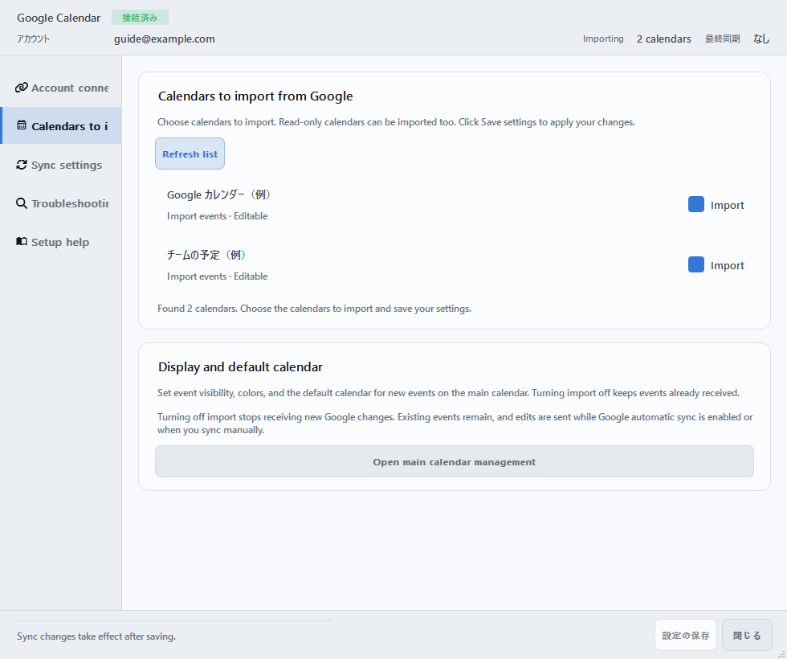
アクセステストは権限を確認する機能です。予定を実際に取得できたかは、同期後にカレンダーで確認してください。Googleの自動同期は初期設定でオンになっており、既定の間隔は定期同期が10分、編集後が30秒です。
OUTLOOK · MICROSOFT 365
Outlookに接続する
個人のMicrosoftアカウントと職場・学校のアカウントを接続できます。現在の接続方法では、カレンダー接続用MicrosoftアプリのクライアントIDが必要です。組織からIDを受け取っている場合は、準備を飛ばしてBから進めてください。
A. クライアントIDがない場合：管理者・アプリ登録担当者の準備
- Microsoft Entraでアプリを登録します。
Microsoft Entra管理センターのEntra ID → アプリの登録 → 新規登録へ進みます。名前を入力し、サポートされているアカウントの種類は任意の組織ディレクトリ内のアカウントと個人用のMicrosoftアカウントを選択します。アプリ登録の権限がない場合は、組織の管理者へ依頼してください。
- デスクトップのログイン用アドレスを追加します。
登録したアプリの認証 → プラットフォームを追加 → モバイルアプリケーションとデスクトップアプリケーションで、
http://localhostをリダイレクトURIに追加して保存します。 - カレンダーの権限を追加します。
APIのアクセス許可 → アクセス許可の追加 → Microsoft Graph → 委任されたアクセス許可で、
Calendars.ReadWriteとUser.Readを確認します。組織で必要とされる場合は、管理者の同意を受けてください。 - 「アプリケーション（クライアント）ID」をコピーします。
アプリの概要に表示されるUUID形式のIDをAir Calendarで使います。クライアントシークレットは不要です。
B. アプリでログインし、予定を取り込む
- 「Connections and subscriptions」で追加サービスの一覧を展開してください。
Outlook · Microsoft 365 → Connect accountをクリックします。開いたウィンドウで1. Connect accountタブを選びます。
- 「App registration and setup guide」を展開し、クライアントIDを入力してください。
カレンダー接続用に準備したIDをApplication (client) IDに入力します。Sign in with Microsoftをクリックし、ブラウザーでログインと権限の許可を完了します。職場・学校のアカウントでは、管理者の承認やMFAが必要になる場合があります。
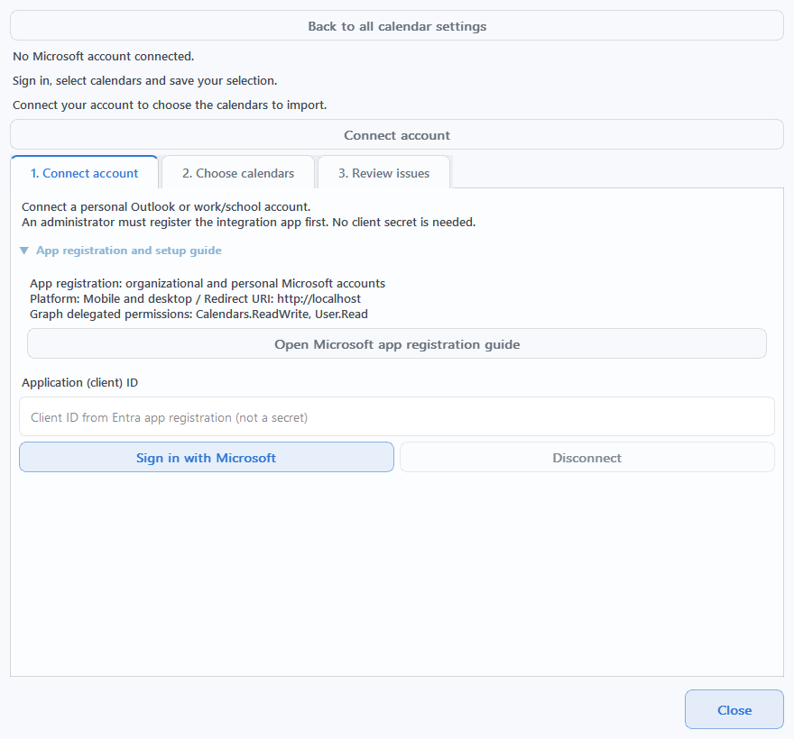
- 「2. Choose calendars」で取り込むカレンダーにチェックを入れてください。
Save calendar selectionをクリックし、続けてSync nowをクリックします。選択を変更してまだ保存していない場合は、Save selection and syncボタンで保存と同期をまとめて実行できます。
- 完了結果を確認し、必要に応じて自動同期をオンにしてください。
Sync completedと取り込んだ件数を確認します。自動更新したい場合は、カレンダーを保存した後、Automatically synchronize every 5 minutesにチェックを入れます。初めてアカウントを接続するとき、自動同期はオフです。
現在のOutlook接続では、今日を基準に過去120日から今後400日までの予定を取り込みます。繰り返しルール全体の編集、招待への返答、接続された予定の別カレンダーへの移動には対応していません。これらの操作はOutlookで行ってください。
Outlookカレンダーの選択画面を見る
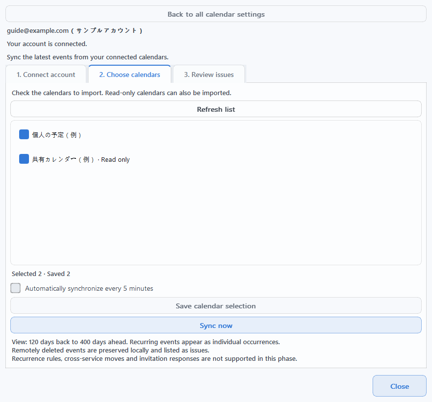
ICLOUD · CALDAV
iCloudに接続する
A. Appleでアプリ用パスワードを発行する
- 2ファクタ認証がオンのApple Accountを準備してください。
Apple Accountの管理ページにサインインします。
- 「サインインとセキュリティ → アプリ用パスワード」で新しいパスワードを作成してください。
作成ボタンをクリックし、名前（例：Air Calendar）を入力します。生成されたパスワードを、アプリのパスワード欄へ貼り付けられるように準備してください。この接続では、Apple Accountの通常のログインパスワードではなく、アプリ用パスワードを使います。
Apple公式のアプリ用パスワードの案内。Apple Accountの通常のパスワードを変更・リセットすると、既存のアプリ用パスワードは無効になるため、新たに発行する必要があります。
B. Air Calendarにメールアドレスとアプリ用パスワードを入力する
- 追加サービス一覧の「iCloud → Connect account」をクリックしてください。
CalDAVアカウント接続ウィンドウが開きます。上部のCalendar serviceがiCloudであることを確認し、1. Connect accountタブを選びます。
- 「Account」にAppleのメールアドレスを、「App-specific password」に発行したパスワードを入力してください。
サーバーアドレスはアプリが設定します。Verify connection and find calendarsをクリックし、カレンダー一覧が表示されるまで待ちます。接続を開始すると、パスワードの入力欄が空になることがあります。
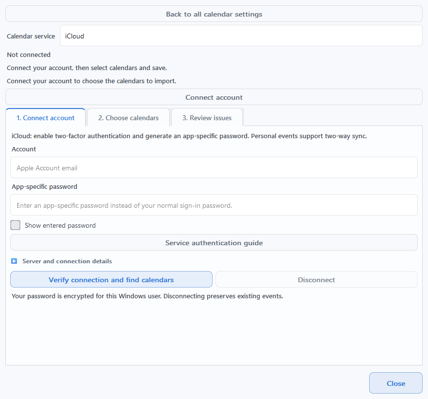
- 「2. Choose calendars」でチェックを入れ、「Save selection」をクリックしてください。
続けてSync nowをクリックします。保存前であればSave selection and syncでも進められます。ログインや一覧の確認だけでは、予定の取り込みは完了しません。
- 予定を取得できたか確認し、自動同期を選択してください。
必要に応じて、カレンダーを保存した後、Automatically synchronize every 5 minutesにチェックを入れます。書き込み可能な個人の予定は双方向に同期されます。繰り返し予定や招待された予定は、元のサービスで編集してください。
CalDAVカレンダーの選択画面を見る
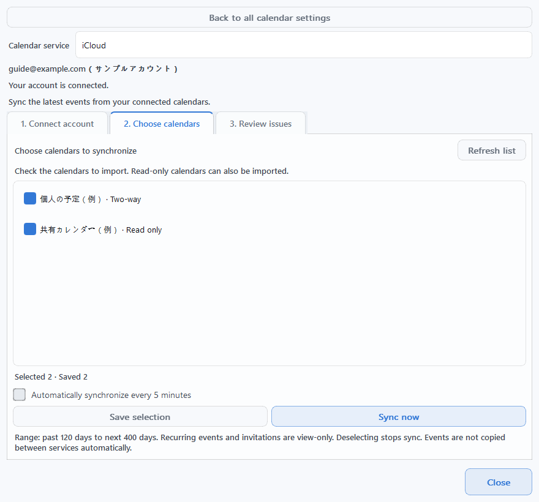
その他のCALDAVサービス
Yahoo・Zoho・Fastmailに接続する
3つのサービスは、iCloudと同じCalDAVアカウント接続ウィンドウを使います。Connections and subscriptions → Show servicesから該当サービスのConnect accountをクリックするか、CalDAVウィンドウ上部のCalendar serviceを切り替えてください。
- Yahoo Calendar
- Accountにメールアドレス全体を、App-specific passwordにYahooで発行したパスワードを入力します。Yahoo公式のアプリパスワードのヘルプで、発行できるか確認してください。Yahoo! JAPANアカウントには対応していません。
- Zoho Calendar
- Zoho Calendarの設定 → 同期（Synchronize）→ CalDAVで、同期するカレンダーを先に指定します。アプリではメールアドレス全体と認証用パスワードを入力し、アカウントのデータセンターサーバーをアカウントの地域に合わせて選びます。2段階認証を利用している場合は、アプリパスワードが必要です。Zoho公式CalDAVガイド
- Fastmail
- FastmailのSettings → Privacy & Security → Connected apps & API tokensからアプリパスワードの管理へ進み、Calendarsへのアクセスを許可したアプリパスワードを作成します。アプリには、登録時のメールアドレス全体とこのパスワードを入力します。BasicプランはCalDAVとアプリパスワードに対応していません。Fastmail公式アプリパスワードガイド
- サービスごとの入力を終えたら、「Verify connection and find calendars」をクリックしてください。
接続に失敗した場合は、ウィンドウ内のService authentication guideボタンから、該当サービスの公式ヘルプを開けます。
- 「2. Choose calendars」で利用するカレンダーにチェックを入れてください。
Save selection → Sync now、またはSave selection and syncで予定を取り込みます。その後、必要に応じてAutomatically synchronize every 5 minutesをオンにします。
CalDAVは今日を基準に、過去120日から今後400日までを取り込みます。個人の予定は書き込み権限に応じて双方向に同期します。読み取り専用カレンダーや繰り返し・招待の予定は、元のサービスで編集してください。接続された予定の別カレンダーへの移動にも対応していません。
ICS購読 · 読み取り専用
ICSアドレスでカレンダーを購読する
祝日・イベント・公開予定など、購読アドレスがあるカレンダーを読み取り専用で取り込みます。GoogleやMicrosoftへのログインは不要です。
- 元のサービスからiCal / ICS購読アドレスをコピーしてください。
カレンダーサービスの共有・エクスポート設定で、iCal、ICS、購読アドレスと表示されているリンクを探します。ブラウザーで見ている通常のカレンダーページのアドレスとは異なります。
https://、http://、webcal://のアドレスを利用できます。 - Calendar managementの「ICS subscriptions」タブで「Add ICS subscription」をクリックしてください。
Subscribe to a calendar by addressウィンドウが開きます。1. Subscription address (required)に貼り付け、2. Calendar name (required)に分かりやすい名前（例：チームのイベント）を入力します。
- 「Add subscription」をクリックし、取り込み結果を待ってください。
アドレスの形式と名前がそろうと、ボタンが有効になります。The address format is valid.は形式を確認した結果であり、サーバーに接続して予定を取得できたという意味ではありません。追加後に最初の更新が始まります。
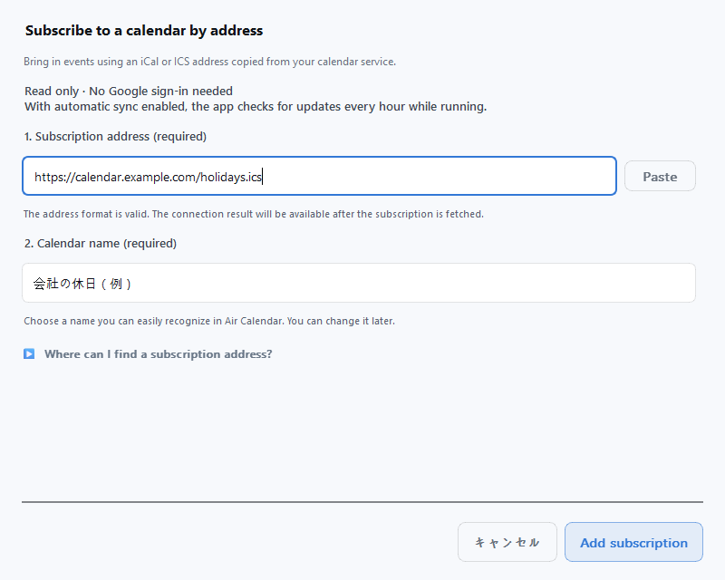
- 追加した購読を選び、「Last refreshed」の時刻を確認してください。
No events have been fetched yet.と表示されている場合、初回の取得はまだ完了していません。Refresh this subscriptionをオンにした状態で、Refresh this subscription nowから再試行します。カレンダーに表示するには、Show in calendar viewsもオンにしてください。
ICS購読の表示・更新設定画面を見る
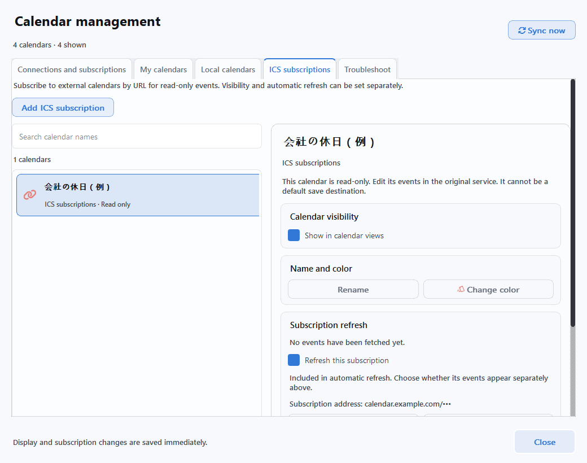
同じ購読を選び、購読URLを編集 → Save changesを使うと、名前・色・表示設定と既存の予定を保持できます。アプリの実行中に、自動更新とその購読の更新がオンになっていれば、1時間ごとに確認します。予定の追加・編集・削除は元のサービスで行ってください。
結果を確認する
03. 同期と画面表示を確認してください
- 選んだカレンダーを保存してから、「Sync now」をクリックしてください。
Calendar managementの共通ボタンは、接続済みのサービスをまとめて更新します。サービスごとのRefreshや個別設定のSync nowを使えば、一つのサービスだけを確認することもできます。既定のショートカットはF5です。変更している場合は、設定したキーを使ってください。
- 完了状態と実際の予定を両方確認してください。
直近の同期・更新時刻と結果のメッセージを確認します。元のサービスにある予定を一つ選び、日付とタイトルを覚えておいて、Air Calendarでも同じ日付を開いてください。アカウントへのログインに成功しただけでは、予定の取得は完了していません。
- 「My calendars」で表示をオンにしてください。
取り込んだカレンダーを選び、詳細欄のShow in calendar viewsをオンにします。元の予定があるのに表示されない場合は、まずこの表示設定を確認してください。
- 新しい予定の保存先を決めてください。
新しい予定を外部カレンダーに作るには、書き込み可能な項目のDefault saveを選択します。読み取り専用の項目は選択できません。メインカレンダーのSave new events toからも保存先を確認できます。
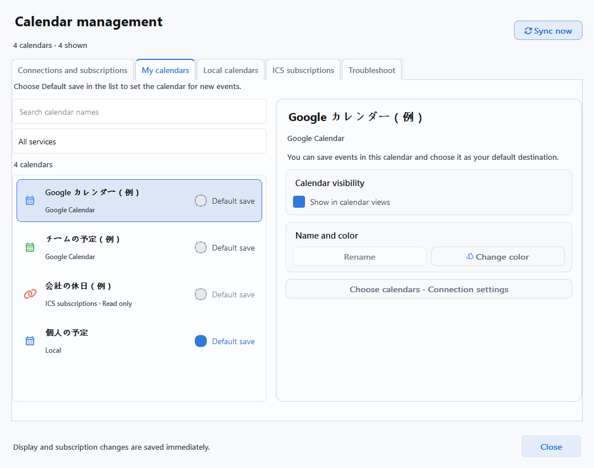
混同しやすい3つの設定
- 取り込み / カレンダーの選択
- 元のサービスの変更を取り込む対象を決めます。選択をオフにしても、取り込み済みの予定は残る場合があります。Googleでは取り込みをオフにしても、残っている編集可能な予定の変更が元のサービスへ送信されることがあります。選択解除とアカウントの切断は別の操作です。
- Show in calendar views（カレンダーに表示）
- カレンダーに表示するかどうかだけを決めます。非表示にしても、同期と既定の保存先の設定は維持されます。メイン画面のVisible …/…ボタンからも変更できます。
- Default save / Save new events to
- 新しく作る予定の保存先を決めます。Googleカレンダーに予定を作りたい場合は、ローカルカレンダーではなく、そのGoogleカレンダーを選んでください。
テスト用の予定を作って確認する場合は、書き込み可能なカレンダーを選んでください。その予定を編集・削除して同期すると、元のサービスにも反映されます。Googleカレンダーの名前はGoogle Calendarで変更します。
自動更新
04. 自動更新を設定してください
自動同期はAir Calendarの実行中に動作します。まず手動同期で結果を確認し、その後に希望する更新方法を選んでください。アカウントの接続と、自動更新のオン・オフは別々の設定です。
- Google Calendar
- Connection settings → Sync settings → Automatically sync Google Calendarで設定します。初期設定はオンで、定期同期は10分、編集後のクイック同期は30秒です。間隔を変更したら、設定の保存をクリックします。自動同期をオフにしても、手動同期は利用できます。
- Outlook・CalDAVサービス
- 2. Choose calendarsでカレンダーを一つ以上保存し、Automatically synchronize every 5 minutesをオンにします。新しいアカウントでは、初期設定はオフです。自動更新がオフでも、手動のSync nowは利用できます。
- ICS購読
- ICS全体の自動更新と、個別の購読のRefresh this subscriptionを確認します。自動更新の間隔は1時間です。個別の更新がオンであれば、全体の自動更新がオフでもRefresh this subscription nowを利用できます。
すぐにオン・オフを切り替えるには、Connections and subscriptionsのサービスカードにあるRefresh automaticallyを使ってください。このスイッチは即座に適用されます。
Google自動同期の設定画面を見る
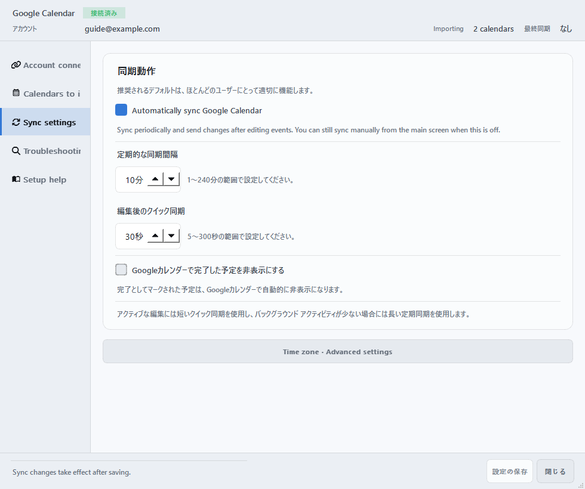
トラブルシューティング
困ったときは
Calendar management → Troubleshootで該当するサービスを選んでください。状態に応じて、Reconnect、Choose calendars to import、Review pending items、Sync againなど、次に行う操作が表示されます。
共通のトラブル解決画面を見る
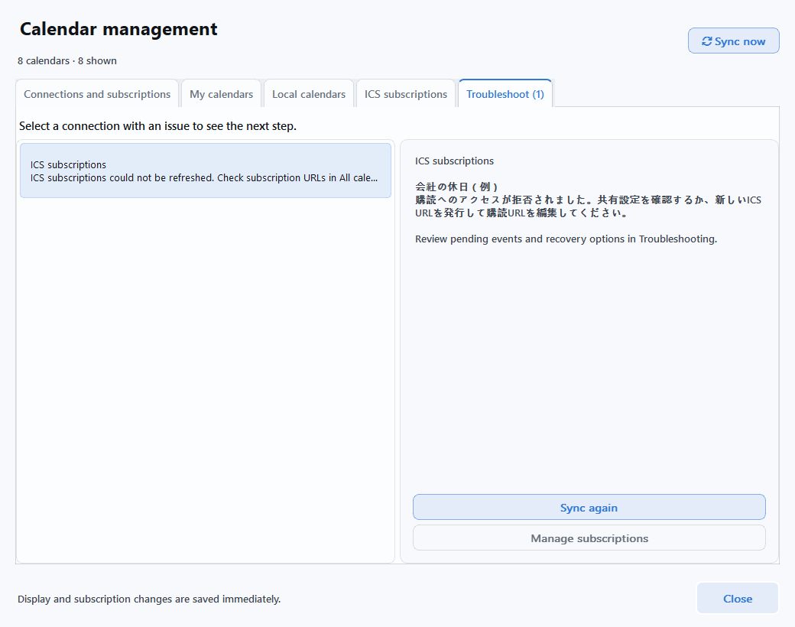
- ログインできたのに予定がありません
- ① 取り込むカレンダーにチェックを入れて保存したか → ② Sync nowが完了したか → ③ My calendars → Show in calendar viewsがオンか → ④ 元の予定の日付を開いているか、の順に確認します。Outlook・CalDAVでは、過去120日から今後400日までの範囲内かも確認してください。
- 「Sync now」ボタンをクリックできません
- まずアカウントの接続を完了し、カレンダーを一つ以上選んで保存してください。処理中の場合は、完了を待ちます。選択を変更した状態では、ボタンがSave selection and syncに変わる場合があります。
- Googleの認証に失敗します
- JSONがデスクトップアプリ用か、Calendar APIが有効か、テストユーザーのメールアドレスとログインアカウントが同じかを確認します。承認が制限された場合は、Google画面に表示される理由を確認し、プロジェクトの所有者や組織の管理者に問い合わせてください。有効期限切れや権限の変更時は、Reconnectから再度許可します。
- アプリ用パスワードを入力しても接続できません
- 選択したサービス、メールアドレスまたはID、有効な新しいアプリパスワードかどうかを確認します。Appleの通常のパスワードの変更、Zohoのデータセンター選択、Fastmailのプラン、Naverのアカウント・プラットフォーム制限も確認してください。各ウィンドウのService authentication guideから公式ヘルプを開けます。
- ICSアドレスは正しいと出るのに、予定を取り込めません
- 形式の確認と、実際の取得は別です。通常のウェブページではなく購読用のアドレスか、非公開リンクの有効期限が切れていないかを確認します。既存の購読を選び、購読URLを編集 → Save changesで保存してから再度更新してください。
- 両方で編集した予定の内容が異なります
- Google設定のTroubleshooting → 未解決の問題で内容を比較し、ローカルを保持またはGoogle版を使用を選びます。Googleでは競合を記録したうえで、リモート側の内容が優先して反映される場合があります。Outlook・CalDAVでは、各設定ウィンドウの3. Review issuesを確認してください。
- 予定の編集・削除が制限されています
- 読み取り専用カレンダー、Naver・ICSの予定は、元のサービスで編集します。CalDAVの繰り返し・招待の予定や、Outlookの繰り返しルール全体・招待への返答も、元のサービスで操作してください。
- 接続をやめたいときは
- 自動更新を止めるには、そのサービスの自動更新をオフにします。アカウントを切断するには、個別設定のDisconnectを使います。ICSはUnsubscribeを使います。この操作で元のサービスの予定は削除されず、取り込み済みの予定は残る場合があります。サーバー側のアプリへのアクセス許可も確認・取り消したい場合は、各サービスのアカウントのセキュリティ設定も確認してください。
問題が起きたサービス名、クリックしたボタン、エラーメッセージを記載し、ユーザーリクエスト掲示板でお知らせください。画面や診断レポートを投稿する前に、メールアドレス、予定の内容、ファイルパス、認証情報が含まれていないか確認し、隠してください。